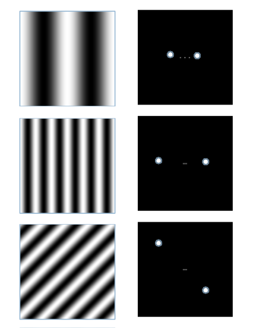
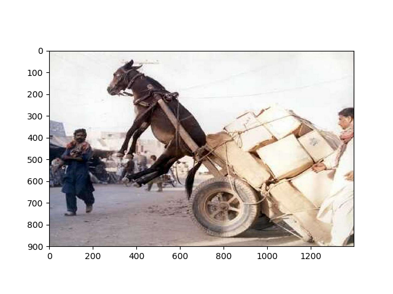
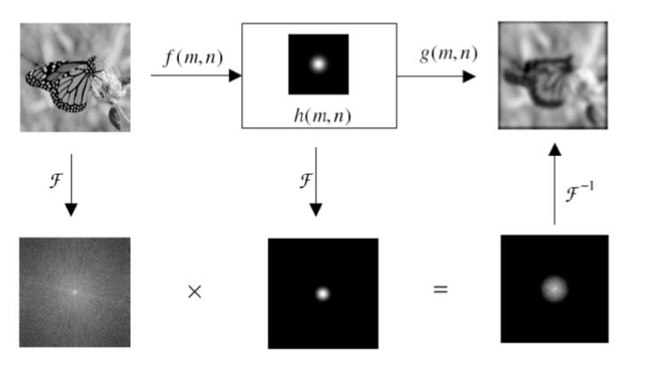
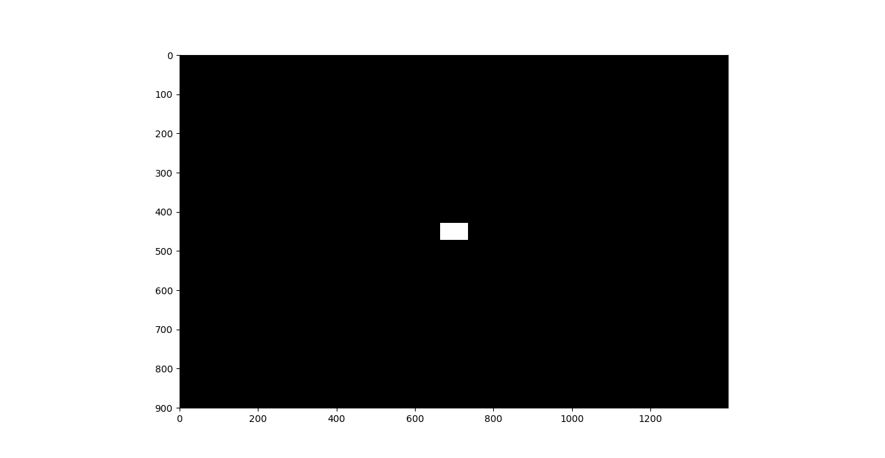
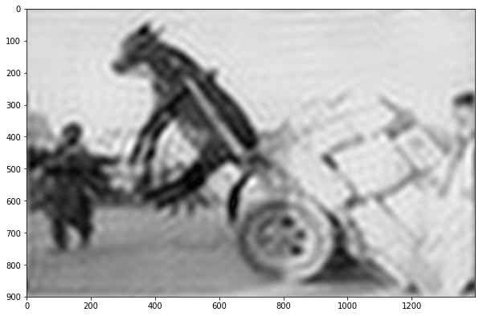
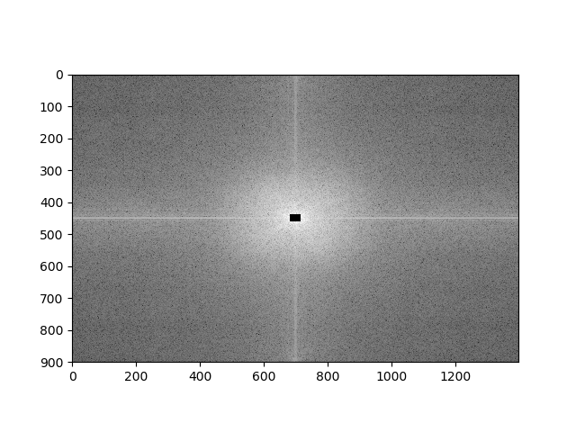
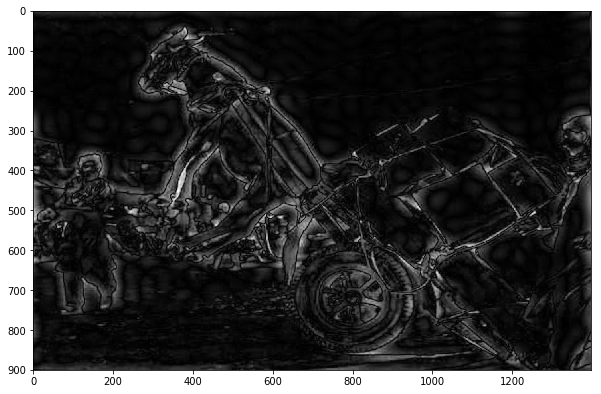
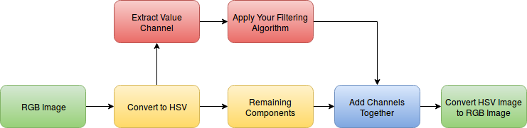
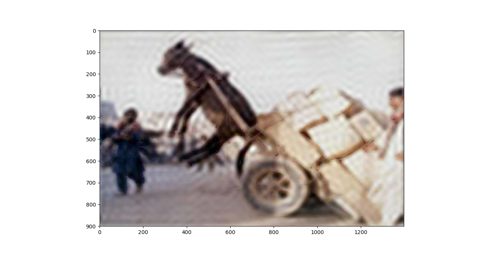
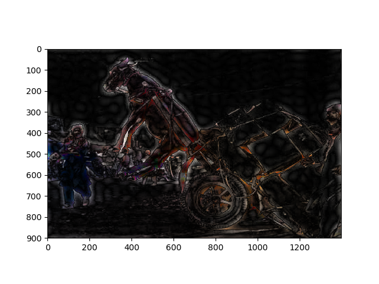

Week 3: Images in Frequency Domain
- Discrete Fourier Transform (DFT)
- Properties of DFT
- Inverse Fourier Transform
- Fourier Filtering
- Color Image Processing Block Diagram
- Demo
Discrete Fourier Transform (DFT)
Fourier transform is a decomposition of a signal into some basis functions. Here basis functions are weighed sum of sin and cos functions Given a discrete image I(x,y) the fourier transform of it is :

Low frequency components are found at the central regions while high frequency components are in peripherals.
The Original Image 
Fourier Transform of the image Without shifting

Fourier Transform of the image after shifting. Shifting is done to move zero frequency component to the center of the image.

Example
For the image shown find Fourier transform at points I(0,0), I(0,1) and I(1,0)

Solution
-
F(0,0)
-
F(0 , 1)
-
F(1, 0)
Properties of DFT
-
Complex
It is a complex representation of the image. So it includes a magnitude and a phase. Magnitude component is the desired one in visualization. It represents the weight of each frequency component and gives an intuitive impression about frequency spectrum of the image. Due to large variations in magnitudes (Center of the image has a high value compared with other values) we display it in a log scale to compress dynamic range see link
- Magnitude image without log transformation

- Magnitude image with log transformation
Phase is very important for image recovery but has no significance in visualization
-
High and low frequency components
In Fourier domain central regions represent the low frequency components and peripheral regions represent the high frequency components and the center of the image represents the DC value with zero frequency which is the total intensity of the image.
-
No one to one corresponding
where each point in frequency domain is calculated from the whole spatial image
not
-
Symmetric
which means that we can recover the image if we have only the half of fourier domain. This is a very important property in fourier transform and used in MRI imaging see partial fourier imaging.

Question: Where redundancy comes from ??
Answer : Each point in fourier domain is a complex with two information magnitude and phase or real part and imaginary part. So half of fourier image actually hold up the whole information of the spatial domain image.
-
Periodic
As we deal with a digital images (Sampled) and sampling implies periodicity so 2D FT is periodic.
Inverse Fourier Transform
Inverse transformation from spatial domain to spatial domain. Looks like fourier transform except for the sign of exponential and the weight of the function.
Fourier Filtering
Basic concept of fourier filtering is to mask desired frequencies and suppress undesired components. It is just multiplication process alternative to convolution in spatial domain which is computationally expensive. the block diagram of fourier filtering process 
Ideal LPF Example
This is the filter that masks the low frequency components 
Spectrum of the image after applying the ideal LPF

the effect of suppression high frequency components is blurring the image 
Ideal HPF Example
This is the filter that masks the high frequency components

Spectrum of the image after applying the HPF 
Suppression of low frequency components will produce an edge image

Color Image Processing Block Diagram
Dealing with colored images is not applicable in RGB color space. So we need to move to another color space for example HSV color space and applying our filtering on the channel associated with intensity (Here value channel). Now region channels again and finally return back to RGB color space. The block diagram is illustrated in the following figure.

This is the result of applying this block diagram on the previous filtered images. We can see that color information returned back to the image.
 
Demo
You can download the demo from cv_week3_demo.